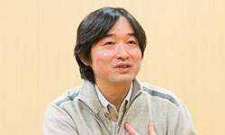

Tetsuya Takahashi ist der Gründer und Leiter von Monilith Soft und Schöpfer der Xenoblade Reihe. Er arbeite früher als Entwickler bei Square Soft dem ehemaligen Square Enix, wo er an Xenogears und Xenosaga arbeitete Er verließ Square um eine Firma zu gründen, um sich kreativer ausleben zu können. Nach einem Treffen über das Spiel Soma Bringer stellte sich Takahashi vor, wie ein Spiel aussehen würde, bei dem die Welt tatsächlich der Körper eines "Riesengottes" ist. Takahashi versuchte einen "reifen" Schreibstil für das Spiel und sagte, dass er in der Zukunft in der gleichen Richtung fortfahren werde. Das Spiel bezieht sich sowohl auf japanische als auch auf westliche RPG-Stile und bezieht sich in einigen Fällen auf den westlichen Stil "ohne darüber nachzudenken". Auf diese Weise soll das Spiel Fans von "textbasierten" JRPGs und westlichen Rollenspielen gleichzeitig ansprechen. Für die amerikanische und europäische Veröffentlichung wurden kleinere Lokalisierungen vorgenommen, sowie Fehlerbehebungen und Spielabgleich. Ursprünglich versuchte Takahashi ein traditionellere basiertes Kampfsystem, aber später kam ihm die Idee ein Kampfsystem zu programmieren, wo der Protagonist in die Zukunft sehen kann.